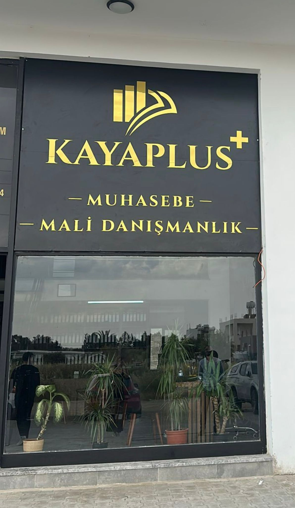
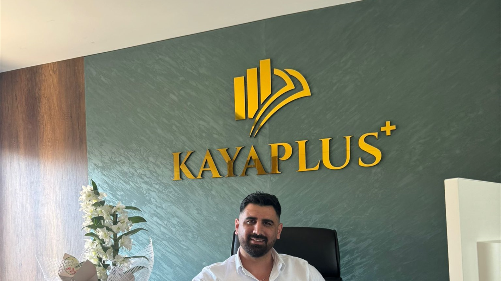

Mali görünürlüğü güçlendiren çalışma düzeni
Belge akışı, hesap kontrolü ve düzenli raporlama aynı çerçevede ilerlediğinde işletme daha güvenli hareket eder.
Kaya Plus; KKTC'de şirket kurma, yönetme, muhasebe, vergi, bordro, kuruluş, tescil ve mali danışmanlık başlıklarında yerli ve yabancı müvekkillere gerçek ofis altyapısı, düzenli süreç takibi ve güven veren danışmanlık desteği sunar.
Değişen mevzuat ve ekonomik koşullar içinde işletmelerin kayıt düzenini doğru kurması ve yasal yükümlülüklerini düzenli yürütmesi için kapsamlı muhasebe desteği sunuyoruz.


Kaya Plus Muhasebe ve Mali Danışmanlık olarak işletmelere muhasebe, bordro, vergi muhasebesi ve tescil işlemlerinde düzenli ve mevzuata uyumlu destek veriyoruz. Hedefimiz, mali yapınızı daha görünür, daha güvenli ve daha yönetilebilir hale getirmektir.
Düzenli muhasebe takibi, nakit akışını, gider yapısını ve vergi yükünü daha net görmeyi sağlar.
Bu yüzden muhasebe, bordro, vergi planlaması ve resmi kayıt süreçlerini tek bir sistem içinde birlikte yönetiyoruz.





İşletmelerin ihtiyaçlarını ve faaliyet gösterdikleri sektörü dikkate alarak muhasebe sistemlerini doğru zeminde kuruyor, kayıtların hatasız ilerlemesi için mesleki destek sağlıyoruz. Bu kapsamda öne çıkan hizmetlerimiz şunlardır:

Çeşitli sektörlerde faaliyet gösteren şirketler için maaş bordrolarının hazırlanması, personel kayıtlarının açılması ve ilgili resmi kurumlara doğru beyanların verilmesi tarafında düzenli operasyon desteği veriyoruz.

KKTC’de tutulan muhasebe kayıtları, hem şirket genel kurullarına sunulan mali tabloların hem de vergi matrahının belirlenmesinde temel oluşturur. Bu nedenle kayıtların vergi mevzuatına uygun ilerlemesi için gerekli mesleki desteği sağlıyoruz.
İşletmenin resmi yükümlülüklerini başlangıç aşamasından itibaren doğru kurmak, sonraki muhasebe ve vergi akışının sağlıklı ilerlemesi için kritik öneme sahiptir. Bu nedenle tescil işlemlerini de muhasebe danışmanlığı kapsamında takip ediyoruz.
Muhasebe yönetiminden vergi planlamasına, bordro takibinden resmi kayıt süreçlerine kadar ihtiyaç duyduğunuz başlıkları tek çatı altında, net sorumluluk alanlarıyla ve profesyonel takip disipliniyle sunuyoruz.
İhtiyacınız ister resmi tasdik, ister vergi stratejisi, ister kurumsal yapılanma olsun; başlıkları birbirinden koparmadan aynı danışmanlık akışı içinde yönetiyoruz. Böylece hem sorumluluk alanları net kalıyor hem de dosya farklı kişiler arasında dağılmadan ilerliyor.
Vergi uyumu, resmi tasdik süreçleri ve özel amaçlı raporlamalar için ihtiyaç duyulan denetim ve onay başlıkları.
Şirketlerin vergi uyumu, resmi tasdik süreçleri ve özel raporlama ihtiyaçlarını mevzuata uygun, düzenli ve takip edilebilir bir sistem içinde yürütüyoruz. Hedefimiz yalnızca belge üretmek değil, sürecin doğru zeminde ve eksiksiz ilerlemesini sağlamaktır.
Vergi stratejisi, teşvik yapıları, yabancı şirketler için yönlendirme ve kritik karar süreçlerinde danışmanlık desteği.
Vergi stratejisi, yatırım planı, teşvik alanları ve uyuşmazlık riski gibi karar kalitesini etkileyen başlıklarda şirketlere güvenli bir çerçeve sunuyoruz. Özellikle yerli ve yabancı yatırımcıların doğru yapıyı kurmasında karar desteği üretiyoruz.
Muhasebe sistemi kurulumu, iç kontrol, birleşme-devir ve şirket yapılanması gibi kurumsal zemini güçlendiren destekler.
Muhasebe sistemlerinin kurulmasından iç kontrol yapılarına, birleşme-devir süreçlerinden kuruluş ve tescil işlemlerine kadar kurumsal yapılanmayı güçlendiren geniş bir danışmanlık alanında çalışıyoruz. Amaç, yalnızca bugünü yönetmek değil, işletmenin yapısını daha sağlıklı hale getirmektir.
İlk görüşmede dosyanızın hangi hizmet grubuna girdiğini ayırır, doğru akışı birlikte kurarız.
Her sektörün muhasebe, denetim, raporlama ve vergi ihtiyacı farklıdır. Deneyim sahibi olduğumuz alanları görerek işletmenize uygun danışmanlık yaklaşımını daha net değerlendirebilirsiniz.

Sıkı düzenleme, güvenilir raporlama ve yüksek uyum beklentisi nedeniyle uzman denetim yaklaşımı gerektiren alan.

Sınır ötesi operasyonlar, maliyet kontrolü ve hareketli sözleşme yapılarıyla özel muhasebe disiplini isteyen sektör.

İzin, tarife, filo ve operasyon sürekliliği tarafında düzenli mali takip gerektiren hizmet alanı.

Kamu yararı yüksek olan bu yapıda stratejik plan, hizmet sürekliliği ve altyapı maliyetleri öne çıkar.
Sezonluk gelir akışı, hizmet çeşitliliği ve marina operasyonları nedeniyle detaylı raporlama isteyen yapı.

Reklam geliri, içerik üretimi ve operasyonel çeşitlilik nedeniyle farklı mali takip ihtiyaçları doğurur.

Rezerv yönetimi, sektör kuralları ve güven esaslı finansal görünürlük ile öne çıkan uzmanlık alanı.

Yüksek risk, büyük ölçekli yatırım ve yoğun mevzuat takibi gerektiren enerji odaklı alan.

Lisanslama, düzenli abonelik gelirleri ve altyapı yatırımlarıyla teknik ve finansal kontrolü birlikte ister.

Üretim maliyetleri, stok yönetimi ve süreç verimliliği nedeniyle kuvvetli mali işler kurgusu gerektirir.

Sezon etkisi yüksek, hizmet gelirleri yoğun ve KDV takibi hassas olan işletme grubu.

Üniversite ve okul yapılarında tescil, kayıt sistemi ve uzun vadeli kurumsal sürdürülebilirlik öne çıkar.

Çok sayıda ürün ve iş kolu nedeniyle teşvik, vergi avantajı ve muhasebe yöntemi farklılaşabilen ana sektör.

Proje bazlı nakit akışı, değişken vergi uygulamaları ve risk yönetimi ihtiyacı nedeniyle yakın takip ister.

Süreklilik, yüksek sorumluluk ve uluslararası raporlama beklentisi ile öne çıkan kritik altyapı alanı.
Temel yasa başlıklarını kısa özetlerle açıp okuyun, detay sayfasından tüm çerçeveyi tek yerde görün ve hangi başlıkta desteğe ihtiyaç duyduğunuzu hızlıca ayırın.
Kuruluş ve operasyon dönemlerinde hangi vergi mevzuatının devreye girdiğini baştan görmek, hem planlama hem de uyum tarafında daha kontrollü hareket etmenizi sağlar.
Verginin doğuşu, beyan düzeni, tahakkuk, tahsil, denetim ve ceza hükümlerini belirleyen ana çerçeve mevzuattır.
Detayı sayfada inceleGerçek kişilerin ücret, ticari kazanç, kira ve serbest meslek gelirleri üzerinden nasıl vergilendirileceğini düzenler.
Detayı sayfada inceleŞirketlerin ve diğer tüzel kişiliklerin elde ettiği net kazanç üzerinden doğan vergi yükümlülüklerini tanımlar.
Detayı sayfada inceleMal ve hizmet teslimleri ile ithalat işlemleri üzerinden alınan dolaylı verginin işleyişini açıklar.
Detayı sayfada inceleMobil iletişim, internet ve benzeri haberleşme hizmetlerinden doğan özel vergi yükümlülüklerini kapsar.
Detayı sayfada inceleBankacılık, sigortacılık ve finansal işlem gelirleri üzerinden uygulanan sektörel vergi düzenini içerir.
Detayı sayfada inceleVefat eden kişilere ait gelirler ile miras yoluyla devredilen malvarlığının vergisel çerçevesini düzenler.
Detayı sayfada inceleVergi başlıklarının yanına şirket kuruluşu, yabancı yatırım, bankacılık, serbest bölge ve sigorta mevzuatını da ekleyerek bu alanı daha bütünlüklü bir rehbere dönüştürdük.
Bu alanda hayat pahalılığı yerine işletmeleri doğrudan etkileyen resmi başlıkları öne çıkarıyoruz: asgari ücret, vergi dilimleri, KDV süreleri, Resmi Gazete akışı ve çevrimiçi vergi araçları.
Her kart resmi kaynağa bağlıdır ve bordro, vergi, beyan veya uyum planını etkileyen somut bir başlığı özetler.
Gelir Vergisi
Vergi Dairesi duyurusuna göre 28 Ocak 2026 tarihli 16 sayılı Resmi Gazete EK IV dayanağıyla 2026 vergilendirme dönemi kişisel indirim miktarı 655.000 TL olarak belirlendi.
Resmi Duyuruyu Aç
Asgari Ücret
Çalışma ve Sosyal Güvenlik Bakanlığı sayfasında yayımlanan bilgiye göre net tutar 52.738 TL. Bu değişiklik bordro, işveren maliyeti ve personel bütçesi açısından ana referans başlıklardan biri.
Asgari Ücret Sayfasını Aç
Vergi Uygulaması
Vergi Dairesi açıklamasında, işletmelerin kartla ödeme talebini kabul etmek zorunda olduğu ve fiş-fatura ihlallerinde cezai yaptırım uygulanabileceği yeniden hatırlatıldı.
ALO 116 Duyurusunu Aç
KDV Süresi
Vergi Dairesi duyurusuna göre kurumlar vergisi yükümlülerinin 20 Mart 2026'ya kadar yerine getirmesi gereken Şubat 2026 dönemi KDV beyan ve ödeme süresi, Ramazan Bayramı nedeniyle 25 Mart 2026 Çarşamba gününe uzatıldı.
KDV Duyurusunu AçTüzük, kararname, kurul kararı ve düzeltmelerin güncel akışı için Devlet Basımevi ana sayfası temel referans kaynaktır. Uyum planı yapan işletmeler için özellikle resmi değişikliklerin ilk duyurusu burada izlenir.
Resmi Gazete'yi AçCanlı kur ekranını koruyoruz; yanına resmi vergi takvimi, uzatma duyuruları ve e-Fatura gibi günlük iş akışında işe yarayan dijital başlıkları ekliyoruz.
 Canlı Kur
USD
Canlı Kur
USDKur kartı resmi Merkez Bankası kaynağından beslenir ve sayfa açık kaldıkça düzenli aralıklarla yeniden kontrol edilir.
 Vergi Takvimi
25 Mayıs
2025 GV/KV beyanı için öne çıkan tarih
Vergi Takvimi
25 Mayıs
2025 GV/KV beyanı için öne çıkan tarih
Vergi Dairesi ana sayfasındaki duyuruya göre 30 Nisan 2026'ya kadar sunulması gereken 2025 yılı Gelir Vergisi ve Kurumlar Vergisi beyannameleri için süre 25 Mayıs 2026 Pazartesi günü mesai bitimine kadar uzatıldı.
 KDV
25 Mart
Şubat 2026 dönemi için uzatma duyurusu
KDV
25 Mart
Şubat 2026 dönemi için uzatma duyurusu
20 Mart 2026'ya kadar beyan ve ödeme yükümlülüğü bulunan Şubat 2026 dönemi KDV için süre, Ramazan Bayramı vesilesiyle 25 Mart 2026 Çarşamba mesai bitimine kadar uzatıldı.
 e-Fatura
Portal
Başvuru ve entegrasyon seçenekleri
e-Fatura
Portal
Başvuru ve entegrasyon seçenekleri
Fatura düzenleme zorunluluğu bulunan gerçek ve tüzel kişi yükümlüler, İnternet Vergi Dairesi üzerinden E-Portal yöntemi veya doğrudan entegrasyon seçeneği ile e-Fatura sistemine başvurabiliyor.
Şirketler farklı yasal düzenlemelere bağlı olarak faaliyet gösterebilir; ancak temel kuruluş yapısı bakımından KKTC Şirketler Yasası'nda belirtilen ana şartlara bağlı kalmak zorundadır. Buna göre KKTC'de temsil edilen her şirket, yabancı şirket şubeleri hariç, aşağıdaki koşulları yerine getirmelidir.
Kuzey Kıbrıs Türk Cumhuriyeti'nde (KKTC) iş yapmak isteyen kişiler veya kurumlar kendi adlarına gerçek kişilik temelinde veya tüzel kişiliğe haiz işletmeler kurup işletebilirler. İşletmelerin hukuki yapıları, KKTC'nde yürürlükte olan yasalara göre belirlenmiştir.
Kuzey Kıbrıs Türk Cumhuriyeti'nde şirket kuruluşu ve faaliyetleri, başta Şirketler Yasası (Fasıl 113) olmak üzere Gelir ve Vergi Yasası, Katma Değer Vergisi (KDV) Yasası, Vergi Usul Yasası, Sosyal Sigortalar Yasası ve İhtiyat Sandığı Yasası kapsamında düzenlenmektedir. Şirket kurmak isteyen girişimcilerin ticaret siciline kayıt yaptırması, şirket ana sözleşmesini hazırlaması ve faaliyet alanına göre gerekli lisans ve izinleri alması zorunludur.
Kuruluş sonrası süreçte şirketlerin Vergi Dairesi'ne kayıt olması, vergi numarası alması ve düzenli beyanname vermesi gerekir. Ayrıca çalışan istihdam eden işletmeler için Sosyal Sigorta ve İhtiyat Sandığı yükümlülükleri bulunmaktadır. Şirketlerin muhasebe kayıtlarını yasalara uygun şekilde tutması ve yıllık mali raporlarını düzenli olarak sunması zorunludur.
Yabancı yatırımcılar açısından da yasal çerçeve açıktır; gerekli izinler doğrultusunda yabancı sermayeli şirket kurulabilir. Tüm bu süreçlerin doğru ve eksiksiz yürütülmesi için profesyonel mali danışmanlık desteği büyük önem taşır.
KKTC'nde işletmelerin hukuki yapısına ve çalışma şartlarını düzenleyen farklı yasalar vardır. Bu yasalar içerisinde temel yasa KKTC Şirketler Yasası Fasıl 113'tür. Aşağıdaki başlıkları açarak şirket, yatırım ve finans mevzuatının kısa özetlerini görebilirsiniz.
Limited şirket kuruluşu, ana sözleşme, tescil, unvan, faaliyet alanı ve sermaye yapısının temel çerçevesini belirler.
Detayı yasalar sayfasında açOrtaklık esasına dayalı şirket modellerinde temsil yetkilerini, sorumluluk sınırlarını ve ortak yükümlülüklerini düzenler.
Detayı yasalar sayfasında açYabancı sermayeyi teşvik eden, vergisel avantajlar ve uluslararası faaliyet kolaylığı sağlayan özel şirket yapısını açıklar.
Detayı yasalar sayfasında açŞirket ismi ön onayı, ana sözleşme başvurusu, ortak-yönetici belgeleri ve gerekli bakanlık onaylarını kapsayan idari akışı özetler.
Detayı yasalar sayfasında açBankaların lisans, sermaye yeterliliği, risk yönetimi ve Merkez Bankası denetimi altındaki faaliyet esaslarını belirler.
Detayı yasalar sayfasında açYurt dışına yönelik bankacılık hizmetleri ve yabancı yatırımcılar için özel finansal yapı kurulmasını düzenler.
Detayı yasalar sayfasında açSerbest bölgelerde ithalat, ihracat ve üretim faaliyetleri için vergi avantajı ve operasyonel kolaylık sağlayan sistemi tanımlar.
Detayı yasalar sayfasında açSigorta şirketleri için sermaye şartlarını, lisans zorunluluğunu ve düzenli denetim esaslarını belirleyen temel mevzuattır.
Detayı yasalar sayfasında açKuruluş başvurusu öncesinde ortaklık yapısı, yönetim kadrosu, sekreter tanımı ve şirketin kayıtlı adresi netleştirilmelidir. Bu dört başlık, resmi dosyanın omurgasını oluşturur.
Şirketlerin en az 2 (iki) hissedarı yani ortağı olmalıdır. Ortaklık yapısı, kuruluş türüne göre pay dağılımı ve temsil düzeniyle birlikte baştan planlanmalıdır.
Şirketlerin en az 1 (bir) direktörü yani yönetim kurulu üyesi olmalıdır. Direktör, şirketin idari ve hukuki karar süreçlerinde temsil sorumluluğu taşır.
Şirketlerin 1 (bir) sekreteri olmalıdır. KKTC Şirketler Yasası'nda belirtilen sekreter tanımı, şirketin hukuki belgelerini sunan ve resmi evrak akışını takip eden kişiyi ifade eder.
Şirketin KKTC sınırları içerisinde resmi bir kayıtlı adresi olmalıdır. Bu adres, şirketin yasal tebligatları ve resmi başvuru dosyaları açısından zorunlu kabul edilir.
KKTC'de yeni şirket kuracak, yabancı şirket şubesi açacak veya uluslararası işletme yapısını değerlendirecek müvekkiller için avantajları, resmi şartları ve doğru yapı seçeneklerini tek akışta özetliyoruz.

Kuzey Kıbrıs Türk Cumhuriyeti; düşük vergi oranları, esnek şirket yapıları ve hızlı kurulum süreciyle girişimciler için güçlü bir başlangıç zemini sunar.
Esnek mevzuat yapısı sayesinde yabancı ortaklı veya tamamen yabancı sermayeli şirketler için kuruluş süreci planlı ve güvenli şekilde yürütülebilir.
Uluslararası İşletme Şirketi yapısı; yurt dışına odaklı ticaret, hizmet ve yatırım faaliyetlerini daha verimli kurgulamak isteyen girişimciler için güçlü bir çözüm sunar.
KKTC'de yerel girişimciler, yabancı gerçek kişiler ve yurt dışı merkezli şirketler; faaliyet alanına ve tercih edilen yapıya göre şirket kurabilir. Kritik nokta, doğru modeli dosyanın en başında netleştirmektir.
Yeni kuruluş veya yeniden yapılanma ihtiyacı varsa işletme yapılarını; faaliyet alanı, vergi etkisi, sorumluluk yapısı ve büyüme planına göre daha kolay karşılaştırılabilir biçimde ele almak gerekir.
Yeni şirket kurmayı planlıyorsanız 3 basit soruyla size en uygun yapıyı hızlıca görün.
Yeni şirket kuracak müşteriler için resmi süreci 4 adımda yönetiyor, ardından muhasebe düzeninin sağlıklı kurulmasına eşlik ediyoruz.
Kuruluş ihtiyacı olan müşteriler için değerlendirilebilecek temel işletme yapıları ve özellikleri.
Yeni kuruluş planlıyorsanız hangi yapının size daha yakın olduğunu tek bakışta görün.
| Şirket Türü | Min. Hissedar | Sorumluluk | Kurumlar Vergisi | KDV | Yabancı Sermaye | Tavsiye Edilen Profil |
|---|---|---|---|---|---|---|
| Şahıs İşletmesi | 1 | Sınırsız | Gelir Vergisi | ✓ | — | Küçük esnaf, serbest meslek |
| Kollektif Ortaklık | 2 | Sınırsız | Ortaklara Yansır | ✓ | — | Aile şirketleri, küçük ortaklıklar |
| Yerel Limited (Özel) | 2 | Sınırlı | Standart | ✓ | ✓ | Çoğu yerli ve yabancı yatırımcı |
| Yerel Limited (Halka Açık) | 7 | Sınırlı | Standart | ✓ | ✓ | Büyük ölçekli girişimler |
| Serbest Liman Şirketi | 2 | Sınırlı | %0 (Muaf) | %0 (Muaf) | ✓ | İhracat, lojistik, üretim |
| Uluslararası İşletme Şirketi | 2 | Sınırlı | %1 Net Kar | Muaf | ✓ | Global işletmeler, dijital şirketler |
Yeni bir yapı kurulacaksa işletme türünüze göre tahmini başlangıç maliyetini hesaplayın.
KKTC'de şirket kuruluşunu düzenleyen temel mevzuat.
Kaya Plus Muhasebe ve Mali Danışmanlık; gerçek ofis altyapısı, düzenli süreç yönetimi, güven veren yönetim yaklaşımı ve yerli-yabancı müvekkile uygun rehberliğiyle işletmelere daha düzenli ve daha güvenli bir mali yapı sunar.
Kaya Plus; yalnızca resmi işlemleri takip eden bir ofis değil, müvekkilinin mali yapısını daha düzenli, daha güvenli ve daha yönetilebilir hale getirmeyi hedefleyen profesyonel bir çalışma düzenidir. Muhasebe, vergi, bordro ve kuruluş süreçlerinde ihtiyacınız olan açıklığı, disiplini ve güveni tek çatı altında sunuyoruz.

Müvekkilin karşısına yalnızca kurumsal bir vitrin değil; karar anında yön verebilen, mevzuatı okuyabilen ve süreci sakin biçimde yönetebilen gerçek bir ekip çıkarmayı hedefliyoruz.
Kaya Plus Muhasebe ve Mali Danışmanlık; engin bilgi birikimi, saha tecrübesi ve güven veren çalışma anlayışıyla, gerek yerel işletmelere gerek yabancı yatırımcılara profesyonel hizmet sunan güçlü kurumsal yapılardan biri olma hedefiyle hareket eder.
Müvekkilin mali yapısına saygı duyan, markasını koruyan ve iletişimde şeffaf kalan bir danışmanlık anlayışını benimsiyoruz. Her süreçte güven duygusunu artıran, abartısız ama net bir çalışma disipliniyle ilerliyoruz.
Kaya Plus için kurumsal sorumluluk, yalnızca resmi yükümlülüklere uymak değil; müvekkilin karşısında görünür, ulaşılabilir ve hesap verebilir bir marka olmak anlamına gelir. Bu nedenle iletişimimizde açıklık, süreçlerimizde düzen ve belgelerde doğruluk esastır.
Yönetim katmanımız; mevzuat bilgisi, saha deneyimi ve müvekkilin önceliğini doğru okuyabilen danışmanlık refleksiyle hareket eder. Süreci gereksiz karmaşıklaştırmadan, doğru adımı doğru zamanda atmaya odaklanan bu yaklaşım Kaya Plus'ı güven veren bir iş ortağına dönüştürür.
Kaya Plus'ı anlatırken yalnızca metin kullanmıyoruz. Ofisimizin girişi, çalışma alanımız ve marka kimliğimiz; müvekkilin karşısına güven veren, görünür ve profesyonel bir yapı çıkarıyor.
Ziyaretçi siteye geldiğinde yalnızca bir danışmanlık vaadi değil, fiziksel olarak var olan ve kurumsal duruşu güçlü bir ofis görsün istiyoruz.
Ofis içindeki görsel dil de markanın parçası. Siyah, altın ve doğal dokularla desteklenen bu alan; premium ama abartısız bir muhasebe danışmanlığı kimliği kuruyor.
Hareketli bir görüntü, markanın yalnızca tasarım değil yaşam alanı da olduğunu hissettirir. Kaya Plus'ın düzenli, canlı ve çalışan bir ofis yapısı olduğu ilk bakışta anlaşılır.
Kuruluştan günlük operasyona kadar müvekkil dosyalarını sahiplenen, sakin ve düzenli ilerleyen ekip yapımızı ana hatlarıyla görün.
Ekibimiz bölümünde yalnızca gerçek ekip fotoğrafları ve o kişilere ait bilgiler yer alır. Şu anda kurucu kimliğiyle Yaşar Kaya'yı öne çıkarıyoruz.
Yaşar Kaya, Kaya Plus'ın kurucu çizgisini temsil eder. Müvekkil ilişkilerinde güven veren yaklaşımı, süreçlerde düzeni önceleyen yönetim anlayışı ve markanın siyah-altın duruşunu sahaya taşıyan net liderlik diliyle öne çıkar.
Muhasebe, vergi, bordro ve kuruluş süreçleri hakkında en çok sorulan sorular.
Telefon, e-posta, WhatsApp, Instagram ve Facebook üzerinden bize ulaşın. Talebinizi aldıktan sonra muhasebe, vergi, bordro ya da kuruluş süreciniz için en doğru ilk adımı birlikte netleştirelim.
Kaya Plus'ta ilk görüşmenin amacı yalnızca bilgi almak değil; işletmenizin muhasebe, vergi, bordro veya kuruluş tarafında tam olarak hangi desteğe ihtiyaç duyduğunu doğru tespit etmektir. Bu nedenle iletişim alanını gerçek ofis hissi veren güçlü bir karşılama noktası olarak kurguladık.
Kaya Plus Muhasebe ve Mali Danışmanlık olarak hedefimiz; mükelleflerimize yalnızca işlem yapan değil, kararlarını güçlendiren, kayıt düzenini görünür kılan ve resmi süreçleri güvenle yöneten bir danışmanlık zemini sunmaktır.